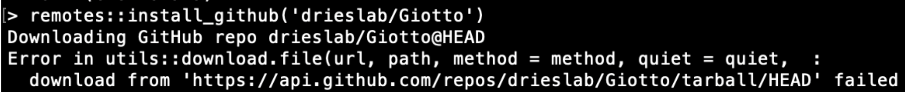

Installation Issues
Installation Timeout
If you’re installing Giotto using the devtools or remote packages, with the most recent version of Giotto, the following error has been observed:

This error is related to the time required for downloading the package. To solve the error, increase the limit of downloading time by running this code in your R console:
If you are doing the installation through a linux terminal, you can run instead this command to directly modify your R environment variable:
echo "R_DEFAULT_INTERNET_TIMEOUT = 1000" >> .RenvironAlternatively, you can use the package pak to install Giotto
if(!"pak" %in% installed.packages()) {
install.packages("pak")
}
pak::pkg_install("giotto-suite/Giotto")MacOS Specific
Packages not found
In the event that packages are inaccessible in the default installation of the Giotto miniconda environment, one troubleshooting method is provided here.
# Restart the R session, while maintaining workspace variables.
# If using RStudio, the following command will do exactly that:
.rs.restartR()
# Creating Giotto Instructions without specifying a Python path will make
# reticulate activate the default Giotto environment.
default_instrs <- createGiottoInstructions()
# Extract python path information
default_python_path <- default_instrs$python_path
# Direct reticulate to use Python within the Giotto Environment
reticulate::use_python(default_python_path)
# Make reticulate iteratively check for the packages
pkg_check <- function(){
py_pkgs = c('pandas','networkx', 'igraph', 'leidenalg','community','sklearn','python.app')
py_pkg_error = character()
test_availability = TRUE
for (i in py_pkgs){
if(i == 'python.app' & Sys.info()[['sysname']] != "Darwin"){
# If the machine OS is not OSX (Mac), break out of the loop
# Otherwise, also check for python.app
break
}
test_availability <- reticulate::py_module_available(i)
if(!test_availability) {py_pkg_error <- c(py_pkg_error,i)}
}
if(test_availability){
cat('All Python packages for Giotto are accessible at environment:\n', default_python_path)
}else{
for (x in py_pkg_error) cat(x,'was not found within environment:\n',default_python_path,'\n\n')
}
return(py_pkg_error)
}
# Check if packages exist again. Ensure function from above code block is defined.
missing_packages <- pkg_check()
retry_install <- length(missing_packages) > 0
if(retry_install){
# Attempt to reinstall all packages.
pkgs_w_versions <- c('pandas==1.5.1',
'networkx==2.8.8',
'python-igraph==0.10.2',
'leidenalg==0.9.0',
'python-louvain==0.16',
'python.app==1.4',
'scikit-learn==1.1.3')
python_version = "3.10.2"
py_pkgs = c('pandas','networkx',
'igraph', 'leidenalg',
'python-louvain','scikit-learn','python.app')
if(Sys.info()[['sysname']] != "Darwin"){
pkgs_w_versions = pkgs_w_versions[!grepl(pattern = 'python.app', x = pkgs_w_versions)]
py_pkgs = py_pkgs[!grepl(pattern = 'python.app', x = py_pkgs)]
}
env_location <- reticulate::py_discover_config()$pythonhome
partial_path_to_conda <- paste0(reticulate::miniconda_path(),'/envs/giotto_env')
py_lou = pkgs_w_versions[grepl(pattern = 'python-louvain',x = pkgs_w_versions)]
pip_packages = c("smfishhmrf", py_lou)
pkgs_w_versions = pkgs_w_versions[!grepl(pattern = 'python-louvain',x = pkgs_w_versions)]
if(.Platform[['OS.type']] == 'unix') {
conda_full_path = paste0(partial_conda_path,'/','bin/conda')
# Remove all previous installations
reticulate::conda_remove(envname = env_location,
packages = py_pkgs,
conda = conda_full_path)
# Reinstall
reticulate::conda_install(packages = pkgs_w_versions,
envname = env_location,
method = 'conda',
conda = conda_full_path,
python_version = python_version)
# Reinstall with pip
reticulate::conda_install(packages = pip_packages,
envname = env_location,
method = 'conda',
conda = conda_full_path,
pip = TRUE,
python_version = python_version)
}
else if(.Platform[['OS.type']] == 'windows'){
conda_full_path = paste0(partial_conda_path,'/','condabin/conda.bat')
# Remove all previous installations
reticulate::conda_remove(envname = env_location,
packages = py_pkgs,
conda = conda_full_path)
# Reinstall
reticulate::conda_install(packages = pkgs_w_versions,
envname = env_location,
method = 'conda',
conda = conda_full_path,
python_version = python_version,
channel = c('conda-forge', 'vtraag'))
# Reinstall with pip
reticulate::conda_install(packages = pip_packages,
envname = env_location,
method = 'conda',
conda = conda_full_path,
pip = TRUE,
python_version = python_version)
}
}Windows Specific
Windows 11 OpenSSL Error
Please note that this troubleshooting workflow is for a Windows 11 64-bit machine.
Unfortunately, it is known that installing miniconda on Windows 11 can sometimes result in an OpenSSL error.
It should be noted that Conda developers are aware of this, and that this particular issue does not have to do with the configuration of the Giotto package. One workaround for this error is described below and on the conda repository, here.
First, open a terminal and navigate to the folder in which miniconda lives on the machine. To find this, press the Windows Key and search for “Anaconda Prompt”. If anaconda3 is installed on the machine, there may be multiple options for this terminal; choose the Anaconda Prompt with “R-MINI~1” in parenthesis.
Output from the following commands will be provided as a comparative guide. Once the terminal is open, identify the Conda environments on the machine by running the following:
(base) PS > conda info --envs
# conda environments:
#
# base * C:\Users\matto\AppData\Local\R-MINI~1
# giotto_env C:\Users\matto\AppData\Local\R-MINI~1\envs\giotto_env
# C:\Users\matto\AppData\Local\r-miniconda\envs\giotto_env
# C:\Users\matto\anaconda3Change your current directory to the R-MINI~1 subdirectory. Then, navigate to the Library/bin/ subdirectory within. Use the dir command to search bin for two groups of files. These files will be moved to a different directory, and should fix the issue. There may be more than two files per group here, and that is okay. All of the files with these names will be moved, regardless of the extension.
(base) PS > cd C:\Users\matto\AppData\Local\R-MINI~1
(base) PS > cd .\Library\bin
(base) PS > dir libssl-1_1-x64.*
# Directory: C:\Users\matto\AppData\Local\r-miniconda\Library\bin
# Mode LastWriteTime Length Name
# ---- ------------- ------ ----
# -a---- 11/4/2022 11:06 AM 686080 libssl-1_1-x64.dll
# -a---- 11/4/2022 11:06 AM 2338816 libssl-1_1-x64.pdbo
(base) PS > dir libcrypto-1_1-x64.*
# Directory: C:\Users\matto\AppData\Local\r-miniconda\Library\bin
# Mode LastWriteTime Length Name
# ---- ------------- ------ ----
# -a---- 11/4/2022 11:06 AM 3416064 libcrypto-1_1-x64.dll
# -a---- 11/4/2022 11:06 AM 10219520 libcrypto-1_1-x64.pdbOnce these files are located, they may be moved to R-MINI~1/DLLs/, the proper directory for the search path.
(base) PS > pwd
# Path
# ----
# C:\Users\matth\AppData\Local\r-miniconda\Library\bin
(base) PS > mv libssl-1_1-x64.* ..\..\DLLs\
(base) PS > mv libcrypto-1_1-x64.* ..\..\DLLs\Finally, change to the DLLs directory within R-MINI~1 and verify that the files now exist there.
(base) PS > cd C:\Users\matth\AppData\Local\r-miniconda\DLLs\
(base) PS > dir libssl-1_1-x64.*
# Directory: C:\Users\matth\AppData\Local\r-miniconda\DLLs
# Mode LastWriteTime Length Name
# ---- ------------- ------ ----
# -a---- 11/4/2022 11:07 AM 686080 libssl-1_1-x64.dll
# -a---- 11/4/2022 11:07 AM 2338816 libssl-1_1-x64.pdb
(base) PS > dir libcrypto-1_1-x64.*
# Directory: C:\Users\matto\AppData\Local\r-miniconda\DLLs
# Mode LastWriteTime Length Name
# ---- ------------- ------ ----
# -a---- 11/4/2022 11:07 AM 3416064 libcrypto-1_1-x64.dll
# -a---- 11/4/2022 11:07 AM 10219520 libcrypto-1_1-x64.pdbNow that these files have moved, this error should disappear. Activate the Giotto environment, and run python within it to test a package import. The OpenSSL error should no longer occur.
(base) PS > conda info --envs
# conda environments:
#
# base * C:\Users\matto\AppData\Local\R-MINI~1
# giotto_env C:\Users\matto\AppData\Local\R-MINI~1\envs\giotto_env
# C:\Users\matto\AppData\Local\r-miniconda\envs\giotto_env
# C:\Users\matto\anaconda3
(base) PS > conda activate giotto_env
(giotto_env) PS > cd C:\Users\matto\AppData\Local\R-MINI~1\envs\giotto_env
(giotto_env) PS > python
Python 3.10.2 | packaged by conda-forge | (main, Mar 8 2022, 15:47:33) [MSC v.1929 64 bit (AMD64)] on win32
Type "help", "copyright", "credits" or "license" for more information.
>>> import pandas, networkx, igraph, leidenalg, community, sklearn
>>>UnsatisfiableError
This error results from conflicts within the anaconda and miniconda environment. This error presents itself when conflicting versions of conda live on the same machine; conda environments can only be so isolated from each other. To begin the troubleshooting workflow, open a terminal (macOS, Linux) or an Anaconda Prompt (Windows), and identify the environments on the machine. If anaconda3 is installed on the Windows machine, there may be multiple options for this terminal; choose the Anaconda Prompt with “anaconda3” in parenthesis.
NOTE: The following commands will be shown as if within an Anaconda Prompt to emphasize the difference for Windows users; for these purposes, the only difference between terminals is the appearance of the message (i.e., (active_env) PS >) preceding the textual entry. No output will be shown here as differences in OS, environments, and versions will vary.
First, identify the environments on the machine:
To proceed, any r-miniconda associated environments will be deleted, and the base environment will be updated. If any environment is frequently used for other analyses and a python version update is undesirable, it may be preserved by cloning the environment. The original environment, however, will be removed or updated, so ensure that files and workflows associated with this environment are redirected to the new, cloned environment. Ensure the path of the cloned environment is not associated with r-miniconda.
It is recommended that conda is updated within any cloned environment (see below).
Verify that the clone exists to the proper specifications before proceeding by comparing packages and python versions:
(base) PS > conda info --envs
(base) PS > conda activate my_base_clone
(my_base_clone) PS > conda update conda
(my_base_clone) PS > python -V
(my_base_clone) PS > conda list
(my_base_clone) PS > conda activate base
(base) PS > python -V
(base) PS > conda list Ensure the base environment is activated. If the r-miniconda environments are still on the machine, remove them. Specify the r-miniconda environments other than giotto_env, as these will be unique to the machine. This may be done at the command line:
Alternatively, in R, reticulate can uninstall miniconda and remove the associated environments:
reticulate::miniconda_uninstall()It is advisable to remove any and all environments which are outdated and/or no longer used.
Recall that by default, Giotto installs a miniconda environment with python v3.10.2 for interfacing with R. Older versions of conda in the base environment cannot handle a python version that high in a different environment. Therefore, the recommended troubleshooting method is to update conda and python within the base environment at a minimum. Updating to python v3.8.5 at a minimum is recommended. It is advisable to update conda and python within each environment on the machine if feasible.
Finally, close the terminal and open the RStudio, VSCode, or an alternative IDE. Running the following should ensure successful installation:
library(Giotto)
installGiottoEnvironment(force_environment = TRUE, force_miniconda = TRUE)Errors during package usage
function as_cholmod_sparse not provided by package ‘Matrix’
Matrix underwent a breaking change after versoin 1.6-2. Reinstalling irlba from source will fix this. See this GitHub issue for more info.
install.packages("irlba", type = "source")Xenium/VisiumHD: arrow and ZSTD support
arrow is a suggested package Giotto uses to open
parquet files. The parquet files that 10X provides use ZSTD
compression which the default arrow installation may not
provide. The following code will check for whether arrow is installed
with ZSTD support, and reinstall if it is not present.
has_arrow <- requireNamespace("arrow", quietly = TRUE)
zstd <- TRUE
if (has_arrow) {
zstd <- arrow::arrow_info()$capabilities[["zstd"]]
}
if (!has_arrow || !zstd) {
Sys.setenv(ARROW_WITH_ZSTD = "ON")
# this may take a while
install.packages("arrow", repos = c("https://apache.r-universe.dev"), type = "source")
}